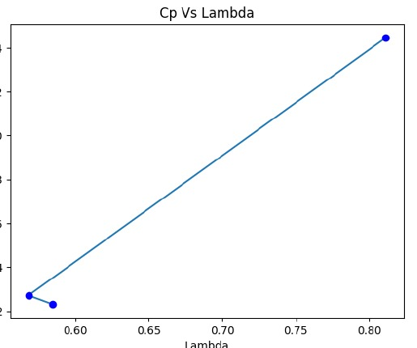

Overview
This project explored whether airflow around highways could be harvested using a compact Savonius vertical-axis wind turbine. The work moved from literature-based rotor geometry selection to a low-cost physical prototype and controlled airflow testing.
Design approach
A two-bladed Savonius rotor was selected for its omnidirectional operation and suitability for turbulent, rapidly changing airflow. Literature results were used to select the aspect ratio, overlap ratio, end-plate diameter, blade arc angle and shape factor.
Prototype & testing
The rotor was fabricated using cardboard blades, Depron end plates, a steel shaft, bearings and a small DC generator. Airflow from a hair dryer was used to test three operating points. Rotor speed, generator voltage and current were recorded and used to estimate tip-speed ratio and coefficient of power.

Engineering takeaway
The prototype exposed the gap between an aerodynamically sensible design and a physically robust small machine. Manufacturing accuracy, rotor balance, structural rigidity, bearing friction and generator characteristics materially limited performance.
The full-scale highway application was a design concept; the demonstrated hardware was a laboratory-scale proof of concept.
Source material
The project narrative above is condensed from the submitted coursework/thesis and keeps design estimates, simulation results and demonstrated hardware distinct.